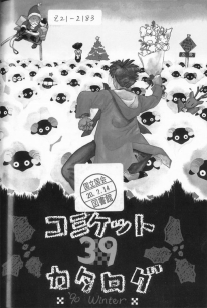
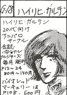
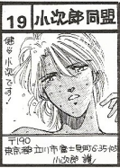
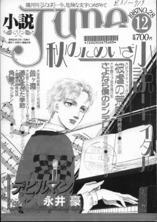
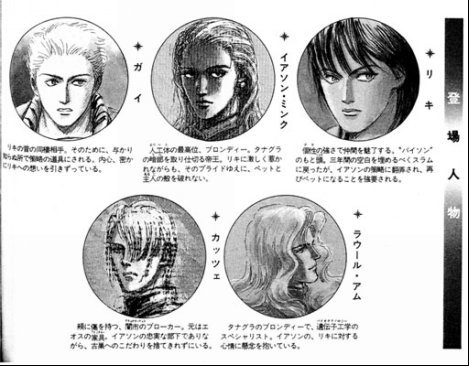
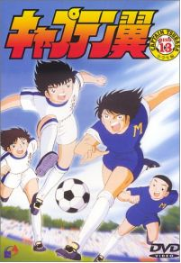
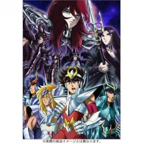

| 「腐女子」の社会史: 女性による女性のための男性同性愛小説の社会史 | |
| 大坂理恵 | |
| UNKNOWN (2015) | |
「腐女子」の社会史
―女性による女性のための男性同性愛小説の社会史―
大坂理恵
内容
第１章 「エス」と男装の麗人―少女が憧れた同性愛とトランスジェンダー
第４章 「少年愛」から「やおい」「ボーイズ・ラブ」―1980年代後半
「ジャパニメーション」や「ポップカルチャー」として、アニメや漫画などの日本発のサブカルチャーが世界的に注目されているなかで、これまで馴染みのなかった「腐女子」という言葉は、日本だけでなく世界中に広がりつつある 。 199 0 年代に広まったとされる同語が指す者は、男性同性愛をテーマとした作品を愛好する女性である。アニメや漫画、小説作品などのいわゆる「二次元」を題材としたものだけではなく、芸能人やアーティストなどの実在の人物いわゆる「三次元」に関しての男性同性愛を好む者も多くみられる。彼女たちのなかには読者でいるだけではなく、同人作家として作者の側に転じる者も多い。日本のポップカルチャー・シーンにおいて特徴的なこれらの男性同性愛作品は、多くの国で若者を中心に注目されつつある。
その作品は主に、オリジナル作品である「ボーイズ・ラブ」、そして漫画・アニメの登場人物や芸能人などの男性同性愛関係にない者同士を恋愛関係にしたストーリーを新たに創り出す「やおい」の２つに大別できる。これらの物語は現実の男性同性愛者同士の関係とも違った特徴をもつ。性行為の上での攻め手と受け手がはっきりと区別されており、性行為の際に肛門性交を行う確率が非常に高い。また、これらの作品の殆どの作者は女性であることが大きな特徴として挙げられる。そのため、一般に「ゲイ文学」「ゲイ作品」と呼ばれるものとは一線を画しており、それらとは融合することなく独自の発展を続けている。これらの、女性による女性のための男性同性愛作品を創作あるいは愛好する女性たちは 、 199 0 年代において、自らを自嘲的に「腐った」人間という意味を込めて「腐女子」と呼ぶようになった。現在では年齢が高くなるにつれて「貴腐人」などと言い表すことも増えている。
二次創作である「やおい」、またオリジナルの「ボーイズ・ラブ」とその源流である「JUNE」ジャンルは、1980年代以降に、同人誌市場のなかで急激な拡大をみせていった。しかし1980年代の「やおい」「ボーイズ・ラブ」は、あくまでサブカルチャーの中でも傍流として位置づけられており、1970年代の「少年愛」が大きな転換点であると論じられてきた。一般的にこの論拠としては、ウーマン・リブ運動を中心とする第二波フェミニズムの興隆と、竹宮恵子や萩尾望都などの「24年組」と呼ばれる少年愛をテーマとした少女マンガ作家の流行、またメディアにおける過激な性表現の浸透が挙げられている。そして山田田鶴子は80年代後半からの「やおい」は、「少数の例外を除いて、ブームとして記されるに留まるであろうと思われる」 [1] と述べている。山田だけでなく、多くの論者は「やおい」を論ずる際に「少年愛」と同列に扱い、明確に区別することなく同じ文脈で論じていることが多い。また、ジェンダー論や女性学などの社会学、あるいは文学論的な視点から研究されることが殆どであり、文化史あるいは社会史的に研究されることはなかった。
本論文では、1980年代に成立した「やおい」「JUNE」というサブカルチャーに焦点を絞り、こうした文化ジャンルの生成から発展、とりわけその理由を、社会史的な見地に立って研究していく。その際、戦前の少女向け雑誌を中心に花開いた少女文化に着目する。小説から生まれた「エス」という女性同士の強い愛情関係、そして少女歌劇と「男装の麗人」が戦前において人気を博した。これらの文化の持つ、少女同士のネットワーク構築と家族制度への対抗文化という機能と比較しながら、戦前と1980年代の女性文化と社会構造の関連性を究明する。
歴史的にみると、女性作家による女性向け作品として「やおい」「JUNE」というサブカルチャーの比較対象になるものがすでに戦前期に存在していた。主に少女向け雑誌などに掲載されていた、「少女小説」と呼ばれる文学ジャンルの作品たちである。耽美的な文体で「エス」という独特の少女同士の同性愛的関係が描かれた作品は、当時の少女たちに熱狂的に支持された。また、少女小説の流行と時を同じくして宝塚歌劇や松竹歌劇などが注目を集め、「男装の麗人」が少女たちの仲で人気を博した。ここでも1980年代と似た形で、同性愛やトランスジェンダーなど、異性愛規範から外れたものが少女に支持されていった。
当論文では第2章以降において、1980年代の少女を論じる際に雑誌「小説JUNE」読者ページを研究資料としている為、雑誌投稿という点から、雑誌「少女の友」読者ページ分析を行うことで少女小説について研究した今田絵里香『「少女」の社会史』に依拠して両者の比較検討をおこなう。
昭和10年代まで、少女たちの文化の中心は出版物、とりわけ雑誌であった。その中でも長期間に渡って人気を博したのが「少女の友」である。本誌は、明治41年から昭和30年まで発刊されていた（昭和17年休止ののち、終戦後に復刊）。小説連載陣には川端康成 [2] や吉屋信子などが名を連ね、とりわけ1930年代において、少女同士の強力な結びつきを描写した小説が多く連載されていた。この親密な関係は「エス」と呼ばれていた。「エス」とはsisterの頭文字からとられた言葉であるといわれているが、血の繋がらない少女同士をあらわすものであり、単なる友情とも擬似姉妹関係とも言いがたく、しばしば情熱的な関係であったとされる。このことは、「エス」のほかに「アルファ、オメガ」という上級生と下級生の愛情を表す言葉など、少女同士の関係を表す隠語が多かったことからもいえる。 [3]
「エス」の世界は文字の世界にこそはっきりとした輪郭を示すものである、と今田は論じている。現実世界をドラマチックに作り替えることが不可欠であり、また自分の感情を文字によって表現し伝達しなければならないので、手紙が必要不可欠となってくる。手紙の中では装飾語の数々をちりばめることで、現実世界を装飾し、よりドラマチックな形に現実世界を再構成することができる。また文通によって、相手に対する思いを常に情熱的な形で吐露し合うことが可能となるためである。 [4]
少女たちはこれらの雑誌連載作品を読み、作品の感想を雑誌に投書していった。雑誌「少女の友」では読者投稿コーナーが重要視されており、総頁数の7分の1を占めていた [5] 。ここには小説作品の感想や日常生活、詩や小説などのほかに、手紙コーナーにはエスのパートナーに向けた恋文が多く掲載されていた。なかでも、投書欄における個人宛のやりとりは少女たちの結びつきにおいて重要な役割を担っていた。ある投書に対する他の少女からの共感を示す手紙や回答、返事などが掲載されていくことで、ペンネームと文字のみでの少女同士の関係が生まれた。読者が発起人となって「友ちゃん会」などと呼ばれる「愛読者大会」が全国各地で開催されていくことにより、これまで読者投稿ページでのみ交流のあった少女同士が現実世界で友人となり、それに加えて新たな友人を作ることができた。ここで出会った少女たちは、少女小説において最も重要な愛情表現の手段である文通をすることで友情を深めていき、ときに現実世界で「エス」の関係を構築していった。 [6] また、少女自身が小説を執筆し、友人同士で交換し批評しあうことも多かった。そのうえで、同人誌を発行していた少女たちも少なくない。
これらの関係に関する当時の見解に関しては諸説あるが、変態性欲としての同性愛などの「病理」的なものとは切り離されて容認されていたと考えられている。当時の少女同士の親密な関係についての現在の解釈は大きく２つに分かれている。少女同士の親密な関係を、近代家族の愛情あふれる母ないし妻としてふさわしい存在とになるための装置として位置づける解釈と、親あるいは男性との権力関係を排除した空間を生成する試みであるという解釈である。 [7] ここから、「エス」の関係を描いた少女小説は、当時「変態性欲」として扱われた女性同性愛とは違った捉えられ方であったと考えられる。
今日によれば、「エス」の重要な機能のひとつに、少女たちにとっての対抗文化としての機能が挙げられる。
第一に、家族への反抗である。男尊女卑的な考え方をする父親や、将来を嘱望されて可愛がられる弟への妬みが少女小説の中には多く描かれている。同じ悩みを抱えた女学生同士は、家族への反抗ゆえに強く結びついていた。自由と立身出世を制限されて苦しむがゆえに家族に反抗する主人公を、友人が自己犠牲的に援助し、主人公を受容していく。その結果、最後には自由と立身出世を獲得する。このようなストーリーがお決まりのパターンであった。 [8]
第二に、家族制度からくる男性嫌悪である。「男らしさ」を嫌悪する描写は、男尊女卑的な考え方に対する反抗に由来している。それゆえに「明るく」「清く」「しめやか」で「懐かしい」関係を男性不在の少女同士で築くことを希望している。 [9]
第三に、結婚の拒否である。家族制度と男性を嫌悪する少女たちは、当然の流れとして結婚を拒否するようになる。エスの関係にある少女同士の片方が結婚し、苦悩しつつ別れるという作品が多くみられた。読者投稿欄においても「結婚の拒否」は重要なテーマであった。しかし、現実には結婚を完全に拒否することは困難であった。 [10]
1930年代において、「エス」は戦前の家父長制のなかで生きる少女たちにとっての、家族・男性・強制的異性愛への対抗文化となっていた。
宝塚歌劇団は、1914年1月に兵庫県宝塚市ではじまった。温泉街の余興場におけるアトラクションとして上演された「おとぎ歌劇」を前身として、1919年に宝塚少女歌劇団が発足した。発足以前から宝塚少女歌劇養成会というものが組織されていたのだが、これは宝塚音楽歌劇学校の前身である。劇団員の養成にも力を入れていた。ここで演じられていたものは「歌劇」から想像するオペラ的な演劇とは違っていた。一種のレビューとみなすべき歌と踊りの芝居、オペレッタであり、これが女性団員だけの固有の形式によって演じられていたという特色があった。その後、オペラ・レビュー・ショウ・ボードビルなどが取り入れられて豪華絢爛な舞台づくりがすすんでいき、1927年上演の「モン・パリ」大ヒットにつながっていく。 [11]
宝塚の「モン・パリ」大成功の影響を受けて、松竹株式会社も翌年に東京松竹楽劇部の女生徒募集を行うようになる。こうして両者が演技を競うようになった。宝塚は「清く正しく美しく」の精神の下にいわゆる生娘を厳選して採用したのに対して、松竹は実力本位での採用が行われた。 [12]
この実力主義の松竹楽劇部に1928年に入団したのが13歳の三浦ウメ子であり、後の「男装の麗人」である水の江滝子である。日本のレビュー史上初めての「男装の麗人」は、東京松竹楽劇部の1930年9月公演「松竹オンパレード」に登場した。ショートカットにシルクハットを被りタキシードを着て司会役を演じた。1931年に本格的な男役を演じ、ターキー水の江という愛称で親しまれるようになる。当時は日本人を外国名で呼ぶことは非常に斬新なことであり、型破りなものであった。水の江滝子が少女たちの爆発的人気を一身に集めたことで、松竹楽劇部は拠点を東京に移した後に松竹歌劇団と改称、その後SKDと改称されるに至った。 [13]
なぜ「男装の麗人」が少女たちから熱狂的な支持を得たのだろうか。それは「男装の麗人」が持ちうる、「夢の王子様」と「やさしく美しいお姉さま」という二つの要素からである。1920年代までの平均的日本人家庭では、10代の少女が自ら選んだ男友達と自由な交際をする機会は非常に少なかった。男女共学は、小学校低学年と一部の私立共学校でのみ実施されていた。そのため多くの少女は女学校に通うことになっており、男子学生と出会う機会も少なかった。また、異性との交際が抑圧され、とかく不純なものとみなされがちであり、異性に対して強い警戒心を抱いていた。そのなかで「男装の麗人」は、少女たちに最も近い"異性の身代わり"として機能したと考えられている。 [14]
また、美青年的な容姿でありながらも美しい女性であったため、「やさしく美しいお姉さま」への憧れも叶えることができる、両性具有的な存在であったと考えられている。正体が女であるということで異性に対する警戒心の強い少女たちを安心させることができた。少女歌劇の売り物である、女だけが造りだす清潔感や男たちの介入しない処女性が、少女たちを惹き付けたのである。そして男尊女卑的考え方が根強い当時、「男装の麗人」は少女の変身願望の具現でもあった。女に生まれたことで叶えられない夢があった、生まれ変わるなら男になりたいという少女たちの潜在的不満を解消してくれたのが「男装の麗人」であったと考えられている。 [15]
本章では、「少年愛」と「やおい」「ボーイズ・ラブ」の違いを明らかにすることで、第一に、「やおい」「JUNE」と呼ばれるジャンルで描かれる男性同性愛の方向性が大きく変化したこと、第二に、作者と読者の関係が変化したことに関して、少女たちが受容する情報としてのメディア表象分析、そして少女たちが文化の発信者となっていくコミックマーケット分析を行うことで、1980年代後半における少女と男性同性愛の関係を考察する。
コミックマーケットとは、まんが・アニメ・ゲーム・その他周辺ジャンルの自費出版（同人誌）の展示即売会である。民間団体の主催する屋内イベントとしては日本最大の規模を誇り、コミケット・コミケと呼ばれる。 [16] 1975年に第一回コミックマーケットが開催された。これまでの「まんが大会」への不満から、批評集団「迷宮'75」によって立案され、中心スタッフ4名によって運営された。当時の参加サークル数は32サークル、参加者は720人であった。また参加者の90％が、少女マンガファンの女子中・高生であり、以降しばらくはこの状態が続いた。 [17] この少女マンガファンの女子中・高生とは、主に「少年愛」マンガの愛好者であった。その後も規模の拡大が続き、1981年において参加サークル数は500サークル、一般参加者は10000人を数えるなど、非常に大きな展示即売会へと発展した。
1981年から会場を東京・晴海の東京国際見本市会場に移した。ここから1986年までは「第一期晴海」期と呼ばれ、即売会の規模の拡大と共に同人誌の形態の変化、運営組織の法人化などが起こった [18] ことなどから、「第一期晴海」期はコミックマーケットの過渡期ともいえる。そして1987年からは会場を東京流通センターに移し、再び晴海の東京国際見本市会場に戻るも、1990年には幕張メッセに移動する。ここでは1980年から1990年前後の10年間をコミックマーケットの過渡期として捉え、主に「やおい」「JUNE」ジャンルを対象に分析していくこととする。表１は、参加者数と「やおい」「JUNE」小説サークル数の推移を集計したものある。
コミックマーケットでは、参加サークルの概要や前回参加者へのアンケート、イベント概要などを掲載したパンフレットとして、開催の度に「コミックマーケットカタログ」が発行される。参加サークルの概要を紹介するために、各サークルには「サークルカット」とよばれるフリースペースが与えられ、ここで文字や絵などでそれぞれのサークルをアピーすることができる。当節では、この「サークルカット」を集計することで、「やおい」「JUNE」小説を発表するサークル数を調査した。ここでの判断材料としては、サークルカットにおける男性同性愛を示す言葉の有無である。「JUNE」「やおい」「ホモ」「（キャラクター名）×（キャラクター名）」「BL」「18禁」などが代表的な言葉として挙げられる。またコミックマーケットは夏季と冬季の年二回開催されているが、より参加サークルの多い冬季を調査対象とした。

図１ 第39回コミックマーケットカタログ
表１ 冬季コミックマーケットにおける「やおい」「JUNE」小説サークル数の推移
|
開催年 |
参加者数(人) |
参加サークル数 |
「やおい」小説サークル数 |
創作JUNE小説サークル数 |
|
1983 |
25,000 |
1,550 |
0 |
1 |
|
1984 |
25,000 |
2,300 |
0 |
0 |
|
1985 |
30,000 |
4,000 |
11 |
2 |
|
1986 |
40,000 |
4,400 |
16 |
6 |
|
1987 |
55,000 |
4,400 |
8 |
9 |
|
1988 |
100,000 |
8,900 |
203 |
18 |
|
1989 |
120,000 |
11,000 |
315 |
17 |
|
1990 |
250,000 |
13,000 |
230 |
14 |
|
1991 |
200,000 |
14,000 |
319 |
42 |
|
1992 |
180,000 |
15,000 |
269 |
56 |
参加者数、そして参加サークル数をみていくと、この10年間のなかで1987年を境に2つの大きな区分ができると考えられる。1987年には男性同性愛小説を主に扱うサークル数が17サークルであったのに対し、1988年では231サークルと、増加率は1300％以上のものであった。総参加者・総参加サークル数は200％の増加率であったことを勘案すると、「やおい」「JUNE」などの男性同性愛を扱うサークル数の増加は著しい。また、コミックマーケットに出展しているサークル代表者の年齢についてみてみると、20代から30代前半までの人が非常に多い。また、女性は全体の72.2%を占めており、一般的な「オタク=男性」のイメージからはかけ離れている。 [19]
またサークルカットにおいては、調査開始時の1982年にはアニメや漫画の男性同性愛的な二次創作作品を「アニパロ」と表現していた(図2)。1984 年までは「やおい」「JUNE」ともに男性同性愛をテーマにした小説サークルは殆ど参加していないが、1985年になると、小説以外においても「やおい」サークルが増加する傾向がみられる。また、このころからサークルカットに変化がみられる。以前は文章主体だったのに対して、キャラクターなどを積極的にアピールするポップなものが増え始めた。
この「やおい」ブームの理由として「キャプテン翼」が挙げられる。「週刊少年ジャンプ」で1981年に連載を開始した同作品は、1983年から1986年にかけてアニメ化され、視聴率は20%を超える大ヒット作品である。サッカー部に所属する少年を主人公とする同作品は、本来のターゲットである少年のみならず、女性からの人気も非常に高かった。主要登場人物には女性は殆どおらず、またサッカー少年同士の友情が鮮明に描かれていることから、「やおい」二次創作を行ううえで非常に扱いやすい題材であったのではないだろうか。
また、1986年には文芸サークルの台頭がみられる。サークルカットにおいては、カップリングを表す言葉としての「攻」「受」表現が多く用いられており、「健全」であることを表記するサークルも現れるようになってきた。これらのサークルの中には、直接「やおい」「JUNE」と書き表さずとも「（名前）×（名前）」や「（名前 ） （名前）」などとキャラクター名でカップルを表現することで、「やおい」作品を扱ったサークルであることをアピールするものも多かった。（図3）
 
図2 コミケット22カタログより 図3 コミケット35カタログより
これらの表現は現在においてはごく一般的なものである。このことから、現在に至る「やおい」文化の基礎がこの時期に作られていったことが窺える。このことから、同人誌と少女の関係において1987年はひとつの転換点とみなすことができると考えられる。
「やおい」「JUNE」などを扱うサークルの主宰者は主に10代から20代の女性である。これまでマンガやアニメの愛好者であった彼女たちを同人誌制作に向かわせたものは何であったか。本節では、同人誌制作のコストや原稿執筆手順、また当時のメディア表象を分析することで、87年に同人誌制作が増加した理由について論じていく。
一番大きな要因として、「文字」の変化が挙げられる。小説作品においては、文字は最も重要な表現手段である。文字の大きさやフォントの違いによって作品の印象が大きく左右される。
出版社から発行される小説作品は写植や組版を経て印刷されるが、個人や数名のサークルが発行する同人誌においては外注することが困難であった。手書きでの原稿作成から家庭用ワードプロセッサーの普及、家庭用パーソナル・コンピューターとパソコン通信サービスの開始、同人誌作家向けの印刷所の増加、これら３つがアマチュア作家の小説同人誌の制作を促進したと考えられる。
第一にワードプロセッサーの普及であるが、1989年におけるワードプロセッサーの普及率は1000世帯中267台 [20] であることからも、ワードプロセッサーによる原稿作成が増加していったと考えられる。この傾向は、コミックマーケットカタログのサークルカットからも読み取れる。サークルカット掲載ページにおいて、1980年代中頃からワードプロセッサーを使用したとみられる文字が増加している。特に小説作品を扱うサークルにおいて顕著であった。
第二に、家庭用パーソナル・コンピュータ（以下パソコン）の登場とパソコン通信サービスの開始であるが、1984年に郵政省（当時）が「パーソナル・コンピュータ通信装置推奨通信方式」（JUST-PC）を告示することで、異なるメーカーのパソコン間での通信サービスがはじまり、1986年には一般企業が商用パソコンネットワークに参入した。開始当初はマニア向けのものであったが、技術発展と機能向上、また通信機器の急激な価格低下によって、パソコン・ワープロそしてパソコン通信は一般ユーザーの間に広がっていった。1988年のパソコン・ワープロの普及台数は1000万台を越えたと言われており、また主な商用ネットワークと草の根BBSを合わせたパソコン通信人口は10万人を超えるものと考えられている [21] 。
最後に、同人誌印刷形態の変化である。1970年代から1980年代初頭にかけては同人誌印刷を行う印刷業者も殆どなく、オフセット印刷は非常に高価なものであった。したがって、当時の同人誌は青焼きコピー紙のものが大半であった。1980年代中頃になると、同人誌印刷を行う印刷業者が増加する。また同人誌制作ハウツー本も出され、1980年代後半になるとオフセット印刷も一般的なものとして普及していった。 [22]
同人誌制作の現実を知るために、1982年に愛知県の高校の漫画研究部で同人誌制作を始めた女性にインタビューを行った。当時の学生の多くはコピー専門店で両面コピーを行い（片面13～18円）、ホチキス止めで製本していたという。理由として、オフセット印刷の最低部数は500部と多く、加えて費用が高額であったことが挙げられた。ワードプロセッサーが普及した1986年前後からはオフセット印刷の最低部数は100部に減り、80年代末には数十部からの発注も可能になった。また価格も下がることで、オフセット印刷による同人誌制作が容易になった。同時期に同人誌即売会などのイベントにおける宅配便業者の出店が増加し、サークル出展時の搬入出作業が容易になった。
また、1985年には東京に時間貸ワードプロセッサーやコピー機、製本に必要な器具を備えた、現在の時間貸オフィスのような形態をとる店舗も登場した。
以上の考察から、ワードプロセッサーとパーソナル・コンピューターの普及、そして印刷業界の変化によって、主に資金面と体力の劣る少女たちがより容易に同人誌製作を行えるようになり、同人サークルの増加の大きな要因となった。
「やおい」「JUNE」同人誌増加の背景には、女性向けの「性」を題材としたメディアの台頭が考えられる。そのなかでも小説分野において特筆すべきものは、ハーレクインである。1980年代初頭、異性愛男性のためのアダルトポルノ文庫は既に書籍市場において地位を獲得していたが、女性読者を対象にしたものは非常に少なかった。この時代に初めて登場したものが、女性作家による女性向け大衆恋愛小説を専門に出版しているハーレクインである。1949年にカナダで創業されたロマンス・フィクションを主に扱うハーレクイン社が1979年に日本で出版を開始した。1988年にハーレクイン日本法人が設立されるなど、1980年代において広く女性たちの間に浸透していった。
コミックマーケットで同人誌が増加した1987年前後のハーレクイン社の新刊出版数は、1985年では209点、1986年 368点（前年比76％増）、1987年 433点（前年比17％増、1985年比107％増）である [23] 。また、雑誌におけるハーレクイン社の広告量は、1986年 20.9段、1987年 52.0段である。1年で35段増加し、増加率は249.4％であった。1987年当時の雑誌における広告主のなかでは12位であった。 [24]
このことから、1980年代後半にハーレクイン社による女性向け大衆恋愛小説が急速に市場に出回ったことが読み取れる。女性の性的関心を満たす手段としての小説の存在が広く認知され始めるのがこの頃であり、ハーレクイン小説の普及が、「やおい」「JUNE」小説の作者／読者増加の一つの要因であると考えられる。
男性同性愛作品ジャンルを示す言葉として「JUNE」という語が用いられている。1990年代に「ボーイズ・ラブ」という言葉が浸透する以前においては、オリジナルの男性同性愛作品は主に「JUNE」と呼ばれていたのである。雑誌『JUNE』とは株式会社サン出版（当時）が1981年に創刊した、男性同性愛をテーマとした漫画小説混合雑誌である。編集部にはコミックマーケット創立に携わった人物もいたといわれている。また、1983年には小説に特化した隔月刊雑誌『小説JUNE』が創刊された。（図4）
本論文では、『小説JUNE』を分析対象とした。同テーマで創刊された雑誌には『ALLAN』などがあったが、そのなかで『小説JUNE』を選択した理由としては、国立国会図書館でバックナンバーの閲覧が容易であったこと、長期間に渡って定期的に発行されていたこと、1980年代当時から全国の書店で取扱いがあったことの３点が挙げられる。『小説JUNE』の主な読者投書コーナーには、小説の感想や文芸・芸能トピック、日常、投稿イラストなどが掲載された「JUNETOPIA」、そして男性同性愛が描かれている文学作品を読者が紹介する「JUNE的文学ガイド」の2つがあった。これらに掲載された読者投稿を分析することで、女性読者はどのような作品を求めていたのか、そしてどのような事柄に共感していたのかを探り、雑誌『小説JUNE』が読者に対して果たしていた役割を解明していく。

図4 『小説JUNE』1987年12月号表紙
「やおい」「ボーイズ・ラブ」などに関する先行研究においては、男性同性愛を題材としながらも読者は女性であるという特異性にのみ注目されてきた。男性同性愛者にとってはあまりに耽美的だったので受け入れられることはなかったと考えられてきている。女性同性愛者についてはConstance Penleyが、1990年のアメリカにおける映画「スタートレック」などを題材にした男性同性愛二次創作である「スラッシュ」作品読者の殆どが異性愛者であり、レズビアンの数はとりたてて多くはなかったと論じている [25] 。しかし現実に女性同性愛者向けのコミュニティサイトなどを見てみると、漫画やアニメのファンが非常に多い。彼女たちの多くは「やおい」「ボーイズ・ラブ」読者であり、ときに作者でもある。また、女性の身体に違和感を持つFtM (Female-to-Male：女性から男性への性別移行を希望する) /FtX(Female-to-X where X is something not man or woman：中性あるいは無性を選択する) トランスジェンダーのコミュニティにおいても同様の傾向がみられる。1980年代の『ＪＵＮＥ』読者のなかの性的少数者、特に女性同性愛者やトランスジェンダーは一体どのようなものだったのだろうか。
まずは男性読者の投稿を分析しよう。創刊当初から同性愛についての悩み相談は頻繁に掲載されていた。15歳の高校1年生は、同性愛者であることに悩んでいたときに書店で『小説JUNE』を見つけたときの感激を、「（前略）家で何度も読みかえして、ほんとに感激です。僕にも仲間がいるんだ・・・そう思ったら希望がわいてきて・・・（以下略）」（1983年10月号）と書いている。このように読者の中には男性同性愛者もおり、『JUNE』を読むことで不安と孤独から抜け出すことができたのである。それと同時に『JUNE』は、男性同性愛者にとって「純粋な両想い」を楽しむためのものであった。1980年代当時、男性同性愛者向けの雑誌として『薔薇族』『さぶ』などが発行されていた。しかし、これらの雑誌では、男性ヌードグラビアや、「ハッテン場」とよばれる不特定の性交相手を求めて集まり性行為を行う場所のレポートが多く掲載され、交際相手募集欄には金銭を目的としたものも少なからずみられるなど、恋愛よりも性行為に重点がおかれていたともいえる。よって「純粋な両想い」を求める大学生は、『さぶ』や『薔薇族』は「体が目的みたいでイヤ」だと書いている。（1984年4月号） 彼のように、特に恋愛感情のない肉体関係を嫌う同性愛者は『JUNE』を好んで読んでいたのではないかと考えられる。その他にも、異性愛者への恋などが多く掲載された。
男性からの相談に回答していたのが女性読者である。同性愛者に理解を示す異性愛者の回答もあったが、掲載数も多かったのが女性同性愛者からの回答である。彼女たちの多くは自らの恋愛体験を基にアドバイスをしている。自らが同性愛者ではないクラスメイトに告白して成功した事例などが多く挙げられ、男性同性愛者たちを励ましていた。
しかしながら、やはり女性からの相談が最も多かった。同性愛者の恋愛相談が多数を占めていたのであるが、中には同性に告白された異性愛者の女性からの相談も見受けられた。「『性別なんか関係ない』と言っていた」のであるが、実際に告白されたら「はっきり行って(原文ママ)ショック」と書いている（1986年12月号）。このように、全ての読者が同性愛を受け入れられるわけでもなかった。その他にも、性別違和感を持ち男性として生きたいと願う女性からの相談も掲載された。この相談への回答として、小説の世界に憧れているだけという厳しい意見もみられたが、中には「JUNEを読んで、私はかなわない夢を見てるんです。わたしが男だったとしたら、男になってこうしよう・・・。（中略）いつもそんな思いで見てるんです」と、相談者に共感する声もみられた（1989年4月）。後に性的少数者の人生相談を掲載するコーナーとして「むふふ告白」という独自のコーナーも誕生した点に、投稿の多さが窺える。
また1988年12月の「JUNE的文学ガイド」には、小説から専門書まで、女性同性愛者向け書籍の特集が組まれた。
前述の通り、男性同性愛者を対象とした雑誌は複数刊行されていたが、女性同性愛者を対象とした雑誌は1980年代当時刊行されていなかった。一般家庭向けパソコン通信の普及は1986年以降になるので、その他の性的少数者も含めた当事者が自らのことを語ることは非常に難しかったのである。そのなかで『JUNE』や『小説JUNE』は、自分が同性愛者ではないかと悩む思春期の生徒や、同性との恋愛に悩む女性たちの受け皿として機能したといえる。性的少数者である読者の実数は不明であるが、投書欄などで可視化された性的少数者である読者の数は、一般の雑誌と比較した際に遥かに多かった。
「JUNETOPIA」には多くの小説作品への感想が掲載されていた。登場人物に共感するものもあれば、ストーリーに感動するものもあれば、苦言を呈するものもある。これを分析することで、女性読者にとって「JUNE」小説がどのような魅力を持っていたのかを明らかにする。題材として、1986年12月から1987年10月まで連載されていた吉原理恵子著「間の楔」を用いた。理由としては、連載当時から人気が高かったこと、ドラマカセットやOVA（オリジナル・ビデオ・アニメ）化されているなど小説以外の感想も比較できること、サド／マゾなどの過激な性描写が含まれていることの３点が挙げられる。
『間の楔』のストーリーは以下のようなものである。コンピューターによって管理された未来都市・タナグラで人工的に作られた超エリート人間であるイアソン・ミンクが、スラム街でリキという青年と出会う。荒々しい気性と決断力、誰にも媚びない強い心と、そして人を惹きつけてやまない容姿を持っていた。イアソンは彼の意志に従わない初めての相手リキに興味を持ち、謀略を尽くして、決して人間と同等に扱われる事なく飼い主の性奴隷として扱われるペットにしてしまう。しかし、それでもイアソンには従おうとしない。そんなリキを苛み、性技を尽くして弄び、全てを手に入れようとするイアソンは、徐々に彼に対してこれまでとは異質な感情を抱くようになる。しかし２人の間には、昔の仲間によって次々と襲い掛かる難題が待ち受けていた。最終的にはイアソンとリキの２人はビル爆発に巻き込まれ、イアソンはリキを庇うが２人とも死んでしまう。

図５ 「間の楔」登場人物紹介（『小説JUNE』1987年10月）
第一に、登場人物（図５参照）について分析していく。連載初期から終了時まで一貫して、「攻」であるイアソンに人気が集中していた。素直に愛情表現をすることができない点に関しては「あのヒネクレタ愛情表現、一種の哀れみさえさそってしまう・・・」「最後くらい、イアソンへ気持ちを告げさせてあげたい」（1987年10月号）という感想が見受けられるように、共感し同情する意見が多かった。
登場人物の「男らしさ」について読者はどのように感じたのか。「間の楔」の登場人物はみな男言葉で会話しており、筋肉質で男性的な容姿を持ち合わせていた。1970年代からの「少年愛」作品とは一線を画しているともいえる。男言葉に関しては、「受身の子の感じてる時のセリフがとても自然」「とてっも（原文）本モノっぽくて、好き。」「男の子の正直な、素直な気持ちが表現されているよーに思うのよっ。」（1987年4月号）などと、男性的あるという点が評価されていた。容姿に関しても、「なんでイアソンて、あんなに男らしくてきれいな雰囲気なんだろう。私の理想。」（1987年10月号）という投書がある。1988年にカセットブック化を希望する投書のなかには、「アニメにありがちな、少年を女性声優がやるということがありませんもんね（略）JUNE作品ですから、やはり男性の声で聞きたいです」（1988年12月号）という意見もみられた。読者は「JUNE」作品のなかに女性的な要素を介在させることを拒否しており、登場人物には「理想の男性」像が要求されていた。
第二に、ストーリーにはどのような感想が寄せられたのだろうか。「間の楔」のストーリーは2009年現在でも高く評価されており、根強いファンも多い。物語はイアソンとリキが死んでしまうことで終わるのだが、連載中からもファンの多くは死を予感していた。「このままではどちらかが死なない限り結着（原文）がつかないようで...恐いです」（1987年8月）。また最終話の感想に関しては、「（略）切なくて、悲しくて。『いきつくのはやっぱりそうかぁ。』とむせびないてしまいました。」「リキとイアソンは死ななきゃ愛しあえなかったんですね」「２人の内どちらかは死ぬんだろーなァ（原文ママ）と思っていたら、２人共遺体ものこさずにふっとんでしまったんですもの。（略）あまりにもひどすぎやしませう？（原文ママ）」と、２人の死を以ってのみ成就する「愛」に悲しみながらもそこに感動を覚えていた。（1987年12月）
また、同作はサド／マゾなどの過激な性描写でも有名である。しかし性描写に関する感想は少なく、「ノーコーなスケベシーンも好きですが（わお、言ってしまったもんの勝ち）、それよりそっち（引用者注：登場人物がかもし出す心のあや）の期待度の方が高い」「読んでてときめかせてくれる小説が好きです」（1987年2月号）、「かっこよくて哀しくて、ハードなSTORY」（1989年6月号）などと、読者が過激な性描写から感じたものは、素直になれない登場人物の揺れ動く心であった。
第１章では、1970年代の「少年愛」ブームから生まれたコミックマーケットのなかで、1980年代後半を境に「やおい」「ボーイズ・ラブ」の作品が急増していったことを述べた。「少年愛」と「やおい」「ボーイズ・ラブ」は、専門家の間でも往々にして一括りにされて論じられるが、全く異なるものである。
「少年愛」作品は、萩尾望都や竹宮惠子、大島弓子、山岸涼子など、昭和24年前後に生まれた「24年組」と呼ばれる少女漫画家たちによって描かれた。「少年愛」作品の登場人物は主に思春期の少年であり、中性的な身体特徴を有している。また、作品の舞台は西洋の全寮制男子校などが多く、1970年代の少女たちの生活からはかけ離れたものであった。前述の山田田鶴子や、後述の上野千鶴子などの論者がいうように、一種のファンタジーとして男性同性愛が扱われていたと考えられる。
しかし、二次創作である「やおい」作品の土台となる漫画やアニメーションは決して非現実的なストーリーでないことが多く、中性的な登場人物も少ない。1980年代後半に「やおい」ブームの立役者であった「キャプテン翼」は小学校・中学校のサッカー部、そして全日本ジュニアユースのサッカーチームを舞台にしており、ここでの登場人物の殆どはサッカー部の少年たちであるので、肉体的な女性性を持ち合わせるものは皆無といえる（図６参照）。「聖闘士星矢」はギリシャ神話をモチーフとした、闘うファンタジー（図7参照）であるが、登場人物は筋肉質で女性的な身体特徴を持ち得ない。また、オリジナル作品である「ボーイズ・ラブ」では、職場での上司と部下、学生と教師などが人気のジャンルとなっていった。登場人物名も日本語の名前が多くなっている。
 
図６ 「キャプテン翼」人物イメージ 図７ 「聖闘士星矢」人物イメージ [26]
このように、1980年代後半を境としてこれまでファンタジー世界の中のものであった同性愛が少女たちの暮らす現実世界のものとなっていった。
また、同時期に、1980年代後半に日本人初のエイズ患者が発生したことに端を発した「エイズ・パニック」が日本中を席巻した。本章は、新聞や雑誌における同性愛やHIV／エイズについての報道についての分析や、それに対する「少年愛」「やおい」愛好者の反応を、「小説JUNE」読者投稿や、その他雑誌での「おかま」「ゲイ」「ゲイ・ボーイ」「ニューハーフ」などの男性同性愛者・トランスジェンダーの扱われ方を中心に分析する。
そのうえで、1980年代後半になぜこのような変化が起こったのか、本章では1980年代における同性愛表象の変化という側面から考察していく。
本節では、朝日新聞を用いて同性愛表象の変化を分析した。新聞における日本人同性愛者についての記述は、1987年に入ってからはじまる。それ以前は、ほぼ全てがヨーロッパやアメリカなどの海外記事であった。87年以前の日本における同性愛の記事は、演劇などの文化面が殆どであった。
198７年に日本人のエイズ感染が公表されたことに端を発した日本でのエイズ・パニックによって、男性同性愛者とHIV／エイズの関連を示唆する記事が増加していく。ゲイ・セックスは「性の乱れ」などと表現され、HIV／エイズなどの感染源となる不道徳な行為であるという論調であった。これらの記事が増加することで、異性愛者のなかでもゲイ・セックスへの関心が高まっていった。この動きについて触れられている記事のなかでは、少女の「『性』への即物的な興味」からくる「ホモって、何するの」という中学生女子の会話が挙げられている。 （1987/7/2） また、1988年には、イギリスの男性同性愛を題材とした映画「モーリス」についての記事がある。制作国のイギリスではみられない、日本での観客の殆どが女性であるという特異な現象が起こった理由について、「愛の純粋を問う哲学的命題とはたぶん無縁であろう、少女たちのアイドル探し」とある。（1988/4/23） このように、マンガやアニメファンだけでなく一般の異性愛者の女性の中でも、男性同性愛への興味関心が高まっていったことが新聞から読み取れる。
その後、1990年には同性愛者の権利を考える会である「動くゲイとレズビアンの会（通称アカー）」が公共施設の利用を拒絶されたことにはじまる「府中青年の家裁判」が始まるなど、日本における同性愛者の社会運動が始まっていくが、このことに触れている記事は少なく（1990年内では2件）、大半はHIV／エイズや性の乱れについての記事であった。
表２ 男性同性愛（「同性愛」or「ホモ」）に関する記事数
|
年 |
1980 |
1981 |
1982 |
1983 |
1984 |
1985 |
1986 |
1987 |
1988 |
1989 |
1990 |
|
記事数 |
3 |
6 |
7 |
1 |
6 |
14 |
43 |
98 |
84 |
69 |
56 |
出典：朝日新聞 聞蔵Ⅱビジュアル
文化に最も影響を与えるとされる雑誌では、同性愛者はどのように扱われていたのであろうか。ここでは雑誌全般を概観するとともに女性誌に着目することで、女性を対象に発信される男性同性愛者についての情報を分析する。
1980年初頭に「おかま」ブームが到来すると、主に女性誌で男性同性愛特集が多く組まれた。ここではゲイバー潜入レポートなどの、水商売系の記事が多数見受けられる。これによって、「おこげ」と呼ばれる男性同性愛者好きの女性が生まれることとなった。しかし、これらの雑誌記事で扱われた男性同性愛者の多くはショーや接客向けに女装した男性であり、男性的な容姿や特徴を備えているゲイはほぼ見受けられない。現在でいえば職業的「おかま」「ニューハーフ」あるいは「性同一性障害」と呼ばれる人々であった。また、当時「ゲイボーイ」とは上記の人々を指して使われた言葉であり、現在の男性同性愛者一般を指す「ゲイ」の意味とは異なった使われ方であった。
表３ 男性同性愛に関する雑誌記事数
|
|
「ホモ」 |
|
「ゲイ・おかま・女装」 |
「同性愛」 |
|
|
|
記事数 |
うち女性誌 |
記事数 |
うち女性誌 |
|
|
1981 |
19 |
6 |
15 |
7 |
|
|
1982 |
6 |
1 |
8 |
2 |
|
|
1983 |
11 |
1 |
10 |
4 |
|
|
1984 |
7 |
0 |
8 |
1 |
|
|
1985 |
0 |
0? |
5 |
3 |
|
|
1986 |
0 |
0? |
1 |
1 |
|
|
1987 |
1 |
1 |
3 |
0 |
|
|
1988 |
6 |
1 |
10 |
1 |
|
|
1989 |
4 |
0 |
28 |
5 |
|
|
1990 |
11 |
2 |
40 |
9 |
|
|
計 |
65 |
12 |
128 |
33 |
14 |
出典：大宅壮一文庫総目録
日本でのエイズ・パニックが起こった1980年代後半、新聞報道は増加しているにもかかわらず雑誌報道が以前に比べて急激に増加することはなかった。特に「ホモ」を題材とした記事は減少している。この現象は、異性愛者にとっての男性同性愛が、エンターテイメントから「忌むべき未知の病の感染源」に変化したことからくるのではないかと考えられる。
以上のメディア表象の変化から、1980年代前半と後半で男性同性愛者の取り扱いが大きく変わっていることが見て取れる。1980年代前半までの「ゲイ」「おかま」「ホモ」などの同性愛男性は、ヘテロセクシュアルとは同居しないものであった。可視化されていた同性愛者はエンターテイメントの世界にのみ存在し、ゲイバーでの店員／客や、テレビタレント／視聴者という関係であった。そして往々にして「男性的」な容姿を持ち合わせていない。これらの特徴には、現実離れした場面設定と中性的な容姿で描かれていた「少年愛」作品と繋がる点がみられる。
しかし、1980年代後半のエイズ・ショックを境として、普通に暮らしている同性愛者の存在が可視化されていく。決して女性的な容姿でもなく特異なキャラクターを持つものでもない、エンターテイメント要素の乏しい同性愛者たちが、エイズという未知の病への恐怖と好奇心から浮き彫りにされていった。エイズに関する報道からゲイ・セックスに興味を持つ少女が増えたことにより、1987年以降に同性愛小説の読者／作者が増加したのではないかと考えられる。そして、1987年の雑誌「小説JUNE」でのアンケート「87年にはやるJUNE的なもの」には、学生×教師、オフィスラブ、レーサー×メカニックなどの、現実世界でありがちな組み合わせがみられる。前述の通り、「少年愛」ものに代表されるこれまでの作品の多くは現実離れした世界が舞台である。この違いは、可視化した同性愛者像の変化からくるものである。
前節までで、HIV／エイズ報道によって、男性同性愛に興味を持つ少女が増加したことを述べた。しかし、エイズ・パニックの最中に男性同性愛者がHIV／エイズの感染源だと報道されることで、嫌悪感を示すことはなかったのだろうか。次節では、雑誌「JUNE」「小説JUNE」の読者ページを分析し、またJUNE小説評論家／作者の作品を読むことで、読者と作者の２つの視点からHIV／エイズと「やおい」「JUNE」読者少女との関係を明らかにしていく。
第一に、「小説JUNE」読者ページを分析することで読者の視点を捉える。1980年代後半から、HIVを社会問題的に扱った作品は主に欧米を中心に多く発表されてきた。それらの多くはゲイの視点から描かれたものである。日本でも幾つかの作品が発表されているが、「やおい」「JUNE」の分野では殆どみられない。ちなみに「小説JUNE」では、HIV/エイズを題材とした作品が掲載されることはなかったが、読者投稿ページに掲載された他の作品の感想の中に、読者のエイズに対する考え方が表れている。「すごいショックだったのは、エイズという病気が発生したこと。昔、本当に神様がいたのなら、その神様は男同士で愛しちゃいけないと、そんな風に人間をつくったのかと悲しくなった。神様でさえが愛にワクをつくっているなんて、ものすごい悲しいことだと思った。現実に同性愛の厳しさを感じました。」（1990年２月号）
その他にも、ゲイであることをカミングアウトして音楽活動を行うアーティストのライブに行った際に啓発活動に心を打たれたとの感想などがみられた。HIV／エイズに批判的な投稿はなかった。また、HIVを題材としたドラマの感想も掲載されているが、HIVよりもゲイ役の俳優の容姿について主に言及されている。（1989年８月号）これらの読者投稿から、多くの読者の女性たちはHIVキャリア／エイズ患者に批判的な感情を持っていないことが読み取れる。
第二に、「やおい」小説作者の視点から分析する。栗本薫名義でJUNE小説を執筆し、雑誌「小説JUNE」において投稿小説を審査する「小説道場」などを連載していた評論家の中島梓は、著書のなかでHIVとやおい作品の関係について言及している。栗本はHIV/エイズをゲイと娼婦によってもたらされる「20世紀の運命的疾病」と位置づけたうえで、HIVキャリアとの恋愛は、繁殖なき愛・死をかけた性交、この2つの是非を問うものとしている。繁殖なき愛は、身分制度社会における役割から逸脱した純粋な「ただ愛」である。また、感染の危険を伴うセックスに至るまでにはパートナーへの揺ぎ無き愛情が不可欠である。そしてHIV感染はゲイ・娼婦と関係を持ったというスティグマとして機能している。そのうえでHIVを、ヤオイ世界では観念においてのみ実践されていた「繁殖なき愛」が、現実で起こったものであるとしている。 [27]
中島の論によれば、HIV／エイズという障害を乗り越えることで登場人物同士の愛は更に強まるのであり、それらを読む女性は家父長制への反抗心を抱いているということになる。
第三に、エイズ・パニックの収束と正しい知識の普及が与えた影響を考察する。エイズ報道の始まった1985年には、一部の医師が「肛門性交がエイズの原因」という発言をしているなど、同性愛者の性行動の危険のみが訴えられていた。 [28] また、マスメディアも肛門性交という特異さからセンセーショナルに報道していった。しかし数年のうちに専門家たちの認識も改められるとともに、異性愛者の感染者数も増加したことから、1990年代初頭では異性間性交渉での感染リスクが広く認識されるようになった。
以上のことから、エイズ・パニックに起因する同性愛者の可視化が「やおい」読者を減少させる可能性は低かったといえる。
第２章では1980年代の「やおい」「JUNE」について主に論じてきた。その後、女性の男性同性愛嗜好はどのような変化を遂げたのだろうか。1980年代と1990年代の大きな違いは、一般女性が男性同性愛者を好むようになったという点である。1991年に女性誌『CLEA』が特集「ゲイ・ルネッサンス'91」を組んだところ、発売後一週間で完売するという大反響を受けた。また、1993年には同性愛者が登場するドラマがヒットするなど、男性同性愛者が広く女性たちの関心を集めるようになった。
また、「やおい」「JUNE」の分野における変化も起こる。1990年代に入ると、二次創作である「やおい」作品のアンソロジー集が多く出版されるようになった。そしてこれまでの「JUNE」ジャンルから派生した「ボーイズ・ラブ」（以下BL）作品が台頭していく。小説は複数の出版社から単行本化され、書籍市場に広く流通するようになっていった。1980年代においては『JUNE』連載作品は単行本化されることが非常に少なく、また出版されたとしても通信販売などによる流通が主であり、一般の書店で購入することはほぼ不可能であったと考えられる。
これまで、女性向けの男性同性愛を扱う雑誌は、主に漫画を掲載する『JUNE』、小説に特化した『小説JUNE』、より耽美的要素の強い『ALLAN』だけであった。また、前述のように連載作品の単行本化も少なかった。それに加えて、これらの雑誌に連載されていない作品はより単行本化が難しかった。現在、殆どの書店では「ボーイズ・ラブ」専門コーナーが作られており、様々な出版社の文庫本を手軽に買うことができる。「ボーイズ・ラブ」に特化した文庫が創刊されたのが1990年代初頭であった。
これらの要因の一つとして、まずティーンズ向け文庫の活況が挙げられる。「ボーイズ・ラブ」文庫が多く創刊された理由のひとつとして、1980年代末期からはじまったティーンズ向け文庫の活況が挙げられる。角川書店、徳間書店、双葉社、学習研究社など大手出版社が、1989年に続々とミドルティーンズ向け文庫に新規参入していった。また、既存の集英社・コバルト文庫、講談社・Ｘ文庫は売上が増加した。当時中学生や高校生であった団塊ジュニアの読書ニーズにマッチした本作りが行われていったためである。この動きは「新世代に迎えられたファンタジー・ワールドの誕生」と評されている。 [29]
これらの文庫がターゲットとした読者層は、主に漫画やアニメ作品に普段から親しんでいる少女である。ティーンズ文庫作品の文体は様々だが、全体を通して堅苦しさを感じるものではなく、作品もファンタジックなものが多かったため、中学生や高校生との親和性が高かった。また、小説であるということから漫画・アニメ愛好者以外にも受け入れられやすく、学校で公然と読むことが可能であった。このことから、ティーンズ向け文庫が多くの読者を獲得していったと考えられる。
次に、同人作家のセミプロ化が挙げられる。出版社の参入だけでなく、同人誌文化が根付いたことによって作品の水準が上がってきたことも大きな理由である。1975年に始まったコミックマーケットは規模を拡大していき、1989年においてはコミックマーケットの来場者が10万人を越えるなど同人誌即売会の盛況が続いた。また、東京だけでなく全国各地で中小規模の同人誌即売会が行われるようになり、全国的に同人誌作家が増加していった。人気同人誌作家は「大手さん」と呼ばれ、同人誌での収入も得られるようになったものも現れた。この流れに便乗するかたちで、1987年には「キャプテン翼」の二次創作アンソロジーがアニメ・漫画雑誌を発行する出版社から刊行され、一般に流通しはじめた。
同人誌以外における作家としては、『JUNE』『小説JUNE』に投稿するアマチュア作家の存在が挙げられる。これらの雑誌に掲載された作家のキャリアは、アマチュア作家として同誌に投稿することからはじまる。中島梓による「小説道場」で高評価を得た作品が掲載されることもあり、また同コーナーに投稿していくなかで名を上げた作家も多い。このような連載作品のなかから評価の高いものが現れるようになり、読者の嘱望によりカセットブックの発売や単行本化が実現したのも1989年前後のことである。
1990年代初頭に起こったゲイ・ブームでは、これまでの女性的な容姿でありショービジネス従事者であった「おかま」「ゲイボーイ」とは違うタイプの男性同性愛者が注目されるようになった。このブームの立役者となったものが、前述の雑誌『CREA』で組まれた特集「ゲイ・ルネッサンス'91」である。20代から30代のキャリア女性をターゲットにした当紙が注目したものは、これまでの「JUNE」などの少年愛作品を愛好する女性とは違った、現実のゲイに関心を持つ女性であった。
ここでの主役は、男性的な髪型や服装、そして職業はサラリーマンから学生などと、普段目にしている男性と何ら変わりのない同性愛者たちであった。当事者同士の会談では、男性同性愛者を「ゲイ」「ホモ」「おかま」「ゲイボーイ」の4つに区分している。しかしこの記事で主に扱われるのは、同性愛者一般を指す言葉ではあるものの、一番流行に敏感でありクリエイティブ職に多い「ゲイ」と、ルックスは普通であるものの新宿２丁目に多く出没する「ホモ」である [30] 。当事者自身が多くの女性が抱く男性同性愛者像としての「おかま」との差別化を図る一方で、本特集「ゲイ・ルネッサンス'91」のなかで「ゲイとおかまはちがうのよっ」というタイトルで座談会を行ったことから、1990年初頭においてメディアが報道していきたいと考えた、また女性に受容されるであろうと考えられた男性同性愛者の条件として、男性的なルックスが挙げられていたと推測される。
ゲイ・ブームと「やおい」「ボーイズ・ラブ」の関係について考察する。ゲイと女性の関係についてであるが、ゲイの友人を持つことがキャリア女性のなかで一種のエグゼクティブであるとされている。「性欲を抜きにしたところで、本当に魅力のある人間」だけがゲイの友人となれると述べられており、「男の主人公に感情移入」し「美しい男となった自分が美しい男に愛される物語」を楽しむ少年愛愛好者とは一線を画している [31] 。また、「JUNE」などの少年愛は男女の恋愛関係を男の子に置き換えただけのものである、と桜沢エリカは述べている [32] 。
以上のゲイ・ブームの考察から分かるように、1980年代後半におけるコミックマーケットでの「やおい」二次創作ブームや、「JUNE」作品の単行本化などの一連の流れとは別に、1990年代初頭からはじまる、20代30代キャリア女性のなかでのゲイ・ブームが起こった。また、現実のゲイを友人にしたがる女性と、「少年愛」「やおい」「ボーイズ・ラブ」作品を愛好する女性は区別されており、両方の趣味を持つものは少なかったのではないかと考えられる。
次に、労働環境に起因する女性の恋愛・結婚観の変化を分析する。これまで注目されてこなかった、男性的な容姿を持ち合わせた男性同性愛者と女性の関係を特集した理由とはなんだったのだろうか。雑誌『CLEA』編集長は前述の特集「ゲイ・ルネッサンス'91」を組んだ理由について、同雑誌がメインターゲットとしている大手企業のOLたちは男性優位の企業社会の中で評価されないことに苦しんでいるとし、男女関係も従来のものと違うものになったと感じたからと雑誌『DIME』でのインタビューで述べている [33] 。そこで、ゲイ・ブームが起こった1990年前後の女性のライフスタイル、特に就労と結婚について、統計資料を基にして分析していく。
産業構造と労働市場の変化は、女性の働き方を大きく変えていった。1960年代からの高度経済成長によって激増した、サービス業を中心とした第三次産業従事者の多くは未婚女性であった。この動きは1980年代において顕著である。高学歴化が進んだ女子学生の受け皿として機能し、大量の未婚層を作り出した。 [34] 1986年に男女雇用機会均等法が施行されたことで、職場における男女の機会均等が法律で定められた。しかしこの時点ではあくまでも努力目標であった。女性の劣悪な労働環境が社会問題として大きく扱われており、法施行後も依然として続く不均等や、セクシュアル・ハラスメントが顕在化した。それに伴い、女性の結婚観も大きく変化している。お見合い結婚と恋愛結婚どちらを望むかという質問にたいして、恋愛結婚を望むと答えた未婚女性が増加した。1960年代ではお見合い結婚が多数であったのであるが、1970年代初頭には人気が逆転した。その後も、恋愛結婚を望む女性が増え続け、1990年前後では、80％を超える女性が恋愛結婚を望んでいる。また1992年の調査では、「理想的な相手が見つかるまでは結婚しなくてもかまわない」と考える女性が、「ある程度の年齢までには結婚するつもり」と考える女性を僅かに上回っている。 [35]
戦前の「少女小説」「男装の麗人」と、1980年代以降の「やおい」「JUNE」小説を比較してみたい。
まず第一は、物語の主体がどこにあったかである。両者ともに性的少数者を題材としているものの、物語の主体が女性から男性へと移っている。戦前においては女性自身が物語のなかで主役となり、ときに男性を批判しながらも理想を追い求めていくものであった。それに対して1980年代以降は、日常生活のなかでの仲間意識から男性同士の恋愛関係に発展していった。
第二は、感情表現の手法である。戦前の「エス」の世界では、熱情的でドラマチックに愛情を伝えるために手紙が非常に重要なものであったが、「やおい」「JUNE」では言葉で感情を伝えることが不器用な者は、セックスなどの性行為で恋人への愛情を表現している。
この変化はどこからくるものなのだろうか。この問いに答えるには、なぜ少女たちは男性同性愛を好むのかという点に言及しなければならない。これまで「やおい」について論じてきた多くの研究者が扱ったテーマであり、「やおい」研究のうえで最も重要なテーマであろう。
永久保陽子は、受身の男性の身体に女性の意識を投影するという側面から、女性が男性同性愛を愛好する理由を論じている。永久保は上野千鶴子の著書を以下のように引用することで、自身のスタンスを明らかにしている。上野は、性行為において受身となる（女性的役割を担う）男性には、往々にしてジェンダー的女性性が求められる。女性が性的な興奮を覚えるのは、「性的客体」としての自分自身である。女性がこれらの小説を読む際には、男の視線を介することで受身の男性に「性的客体」化された自己身体に興奮するのである。 [36] 女性は意思の如何を問わず、男性の性的欲望のメカニズムを深く内面化させられてしまっている。よって、ヘテロセクシュアル女性は、本来性的対象とする男性の裸体ではなく、女性の裸体に刺激されるのである。女性性を協調された男性をエロティックに描写することで、女性読者により強い刺激を与えようとしているのだ。 [37] また、上野千鶴子は、性を封じられた身体を持つ女性が「理想化された自己」を表現するために、性にオープンでありながらも女性的な見かけをもつ「少年」という装置の助けを借りたとしている。そして男性同性愛作品は「性という危険物を自分の身体から切り離して操作するための安全装置、少女にとって飛ぶための翼であった」と論じている。 [38] 藤本由香里も同様に、現実世界の女性に向けられたジェンダー抑圧や、女性の性にたいするさまざまな忌避から逃れるための装置として「少年愛」が生まれ、いったんその装置が生まれたら女性は「性を遊ぶ」ために能動的に作品を生み出すようになり、二次創作が増えていったと論じている [39] 。
しかし、1980年代の少女たちの実態はどうであったのだろうか。『小説JUNE』の読者投稿を分析した結果、トランスジェンダー的なものを除いては、女性性への拒否に結び付けられるキーワードは発見できなかった。そして、男性的な身体特徴を持ち合わせた人物が登場し、女性読者が生きている現実世界と大差ない舞台設定で書かれた「JUNE」「やおい」作品を読む上で、読者の多くは受身の男性に自己を投影することはなかったのではないかと考えられる。上野は、女性は「性を封じられた身体」を持っていると論じているが、彼女たちは決してそうは感じていない。自己の性に対しては非常に保守的で、結婚するまで性交渉はしないと明言している読者も見受けられた（1987年10月号）。しかしこれは自らの意思で選択した結果である。後述の通り、婚前交渉が容認されており、愛と結婚とセックスの３者が結びつかなくなっていた1980年代の文化的・社会的背景からいえば、彼女たちを抑圧する大きな要因は見当たらない。そして性描写についての投書は目立つほど多くはなく、読者は性行為を言葉にならない感情を表す「愛情表現」の一種として捉えていた。つまり彼女たちにとって男性同士の性行為は、抑圧からの解放ではなく、相手に対する想いを情熱的に吐露すると同時に、登場人物そして自分自身が生きている現実世界をドラマティックに作り替えるための手段であった。
少女同士の親密な関係である「エス」にも同様のことがいえる。文通という手段でお互いへの想いを情熱的に伝え合っていたのである。1980年代において愛情表現が文通からセックスへ変化したのは、恋愛と結婚と生殖（性行為）の関係が変化したことによる。
戦前は、結婚ののちに性行為を行い、愛情（家族愛）が生まれた。家と家との結婚が、親同士の取り決めによってなされることが多かったからである。しかし、1960年代に入ると愛情を感じた相手と結婚し、性行為を行うようになった。男女関係においては恋愛的要素が優勢となり、愛情を感じない相手との結婚は否定されていく。この恋愛重視の流れに伴って第二波フェミニズム運動によって性解放が謳われ、1970年代には愛情を感じた相手と結婚を前提としたセックスを行い、結婚へ向かっていくようになる。愛さえあれば婚前交渉を容認されるようになっていった。そして80年代には愛情を感じた相手と性行為を行うが、この関係は必ずしも結婚に結びつくものではなくなっていた。女性の社会進出が目立つようになり、結婚だけが人生のゴールではないという考えが広く女性の間に浸透していった。 [40] 婚前交渉が一般的ではなく、親が決めた結婚相手との性行為を余儀なくされた戦前の女性にとっては、性行為は最大の愛情表現とはなりえなかったのである。その一方で1980年代において、性行為は恋人の愛情を感じるための手段であり、また時として性行為を行ったことにより恋愛関係が始まるケースも増えつつあった。性行為と「愛」は非常に密着したものであったからこそ、性描写が重要視されたのである。
第三は、女性同士のネットワークのあり方である。戦前においては、少女雑誌の読者が主催する「愛読者大会」において、雑誌紙面で知り合い文通を続けていた人と対面し、また新たな友人と出会い、文通で親交を深めるようになっていった。これと対になる形で「コミックマーケット」などの同人誌即売会が位置づけられる。同人誌の作者／読者であった女性、あるいは雑誌で知り合った女性たちが即売会のスペースにおいて、現実世界で対面する。また即売会の参加者はカタログを読んだりすることで、自分と興味関心を同じくする人と出会うことができた。多くのサークルカットには住所が書いてあるように（図２参照）、即売会終了後には手紙でやりとりをする例が多くみられる。同人誌作者はペーパーという同人サークル広報誌を送り、読者は手紙によって同人誌の通信販売を依頼する。そのなかでも友人となった人とはイラスト交換や文通を行うこともあり、アンソロジー（複数名で発行された同人誌の総称）参加を呼びかけたり合同でサークルを組むこともあった。書籍以外での同人サークルの発行物に便箋が非常に多いというのも、手紙によるやりとりが非常に重要なものであったからだといえる。
このように、戦前の少女文化と1980年代における「やおい」「JUNE」文化には強い共通点が見出せる。「少女小説」と「やおい」「JUNE」小説に共通しているものは、恋愛を成就させるためには当人同士の性的指向や家族、社会制度など多くの障壁があること、そしてその当時最も有効である愛情表現を時に過剰であるほどに取り入れたことである。その愛のハードルが高ければ高いほどロマンティックなものであると感じ、時に死をも厭わない愛をエンターテインメントの世界で楽しんでいた。戦前においても近現代においても、少女たちは性行為よりも「確かな愛」、性別や社会階層などに囚われない「人と人との繋がり」を希求していたのである。
謝辞・文責
当研究にあたり、熱心なご指導を頂いた、慶應義塾大学経済学部矢野久教授（当時）に深く感謝いたします。女性を対象とした男性同性愛という内容に驚きながらも、時に優しく厳しい指導を賜りました。
また、『コミックマーケットカタログ』在庫分を国会図書館に納本してくださっただけでなく、Web上で不足分の寄付を多くの方々に働きかけて下さいましたコミックマーケット準備会の皆様、そしてその働きかけに応えてカタログを寄付してくださったコミックマーケットを愛する方々、快くインタビューに応じて下さった各務千草様、Twitterで論文を読みたいと言って下さった皆様、その他多くの皆様に感謝いたします。
慶應義塾大学経済学部 矢野久研究会 2009年度卒業論文
大坂理恵
Mail: rie.osaka@gmail.com
参考文献
秋山正美『少女たちの昭和史』 三秀舎、1992年
今田絵里香『「少女」の社会史』 勁草書房、2007年
岩上真珠「現代日本の若者（１）」 『新訂比較文化研究―若者とジェンダー―』放送大学教育振興会、2005年
上野千鶴子『発情装置 エロスのシナリオ』 精興社、1998年
コミックマーケット準備会編『コミケット・グラフィティ―マンガ・アニメ同人誌の10年―』朝日出版社、1985年
コミックマーケット準備会編「コミックマーケットとは何か？」2008年 「東京大学大学院情報学環 コンテンツ創造科学産学連携教育プログラム」（2007年6月）発表資料に加筆したpdfファイル。
出版年鑑編集部編『出版年鑑』 出版ニュース社、1985年、1986年、1987年、1990年
杉山あかし「コミケット30周年記念調査結果報告」 コミケット準備会編『コミックマーケット30'sファイル：1975-2005』、コミケット、2005年
樽井正義「ゲイ・コミュニティとエイズ」 『エイズを知る』角川書店、2001年
テレコムサービス協会編『ニューメディア白書'88』日刊工業新聞社、1989年
永久保陽子『やおい小説論』 専修大学出版局、2005年
中島梓『タナトスの子供たち―過剰適応の生理学』筑摩書房、1998年
藤本由香里「少年愛／やおい・ＢＬ」『ユリイカ臨時増刊 ＢＬスタディーズ』青土社、200 7年 1 2 月
山田田鶴子『少女マンガにおけるホモセクシュアリティ』ワイズ出版、2007年
Constance Penley, "Feminism, Psychoanalysis, and the Study of Popular Culture" Cultural Studies, Lawrence Grossberg(ed), Loutledge, 1991
資料・データベース
「主要耐久消費財の所有数量 (1,000世帯当たり）（全世帯）－ 全国（昭和34年～平成11年 」『日本長期統計総覧』総務省統計局webサイト
『 CRE A 』文芸春秋社 、 199 1 年２月号
『 DIM E 』 小学館 、 199 1年5月 1 6 日号
大宅壮一文庫総目録
朝日新聞 聞蔵Ⅱビジュアル
分析雑誌・カタログ
『小 説 JUN E 』
（注１）数字は発刊された月の号を示す。「○」＝○月号
（注２ ） 198 3年 1 0 月までは 「 JUN E 」の増刊 、 198 4 年以降は隔月刊であった。
198 3年6、 1 2 。 198 4年2、4、6、8、 1 0、 1 2 。 198 5年2、4、6、8、 1 0、 1 2 。 198 6年2、4、6、8、 1 0、 1 2 。 198 7年2、4、6、8、 1 0、 1 2 。 198 8年2、4、6、8、 1 0、 1 2 。 198 9年2、4、6、8、 1 0、 1 2 。 199 0年2、4、6、8、 1 0、 1 2 。
『コミックマーケットカタログ』
（注）数字は開催回数を示す。「○」＝第○回コミックマーケットカタログ
2 2 （ 図2 引用） 、 2 4、 2 6、 2 8、 3 0、 3 2、 3 4、 3 5 （ 図3 引用） 、 3 6、 3 7、 3 9 （ 図1 引用） 、 4 1、 43
[1] 山田田鶴子『少女マンガにおけるホモセクシュアリティ』ワイズ出版 、 200 7 年 、 15 1 頁。
[2] 「乙女の港」「花日記」などを連載。しかしこれらの作品は、ゴーストライターである芥川賞作家の中里恒子が執筆していた。
[3] 今田絵里香『「少女」の社会史』勁草書房 、 200 7 年 、 189-19 1 頁。
[4] 今田絵里香『「少女」の社会史』勁草書房 、 200 7 年 、 192-19 3 頁。
[5] 今田『「少女」の社会史』 、 14 2 頁。
[6] 今田『「少女」の社会史』 、 22 1 頁。
[7] 今田『「少女」の社会史』 、 19 6 頁。
[8] 今田『「少女」の社会史』 、 212-21 3 頁。
[9] 今田『「少女」の社会史』 、 21 5 頁。
[10] 今田『「少女」の社会史』 、 215-21 6 頁。
[11] 秋山正美『少女たちの昭和史』 三秀舎 、 199 2 年 、 180-18 2 頁。
[12] 秋山『少女たちの昭和史』 、 18 2 頁。
[13] 秋山『少女たちの昭和史』 、 182-18 5 頁。
[14] 秋山『少女たちの昭和史 』 186-18 8 頁。
[15] 秋山『少女たちの昭和史 』 18 8 頁。
[16] コミックマーケット準備会編「コミックマーケットとは何か？ 」 200 8 年。「東京大学大学院情報学環 コンテンツ創造科学産学連携教育プログラム」 （ 200 7年6 月）発表資料に加筆し た pd f ファイル。
[17] コミックマーケット準備会編『コミケット・グラフィティ―マンガ・アニメ同人誌 の 1 0 年―』朝日出版社 、 198 5 年 、 25 8 頁。
[18] 前掲「コミックマーケットとは何か？」
[19] 杉山あかし「コミケット30周年記念調査結果報告」 コミケット準備会編『コミックマーケット30'sファイル：1975-2005』 コミケット、2007年、290頁。
[20] 主要耐久消費財の所有数量 (1,00 0 世帯当たり）（全世帯）－全国（昭 和 3 4 年～平 成 1 1 年）『日本長期統計総覧』総務省統計局
[21] テレコムサービス協会 編 『ニューメディア白 書 '8 8 』日刊工業新聞社 、 198 9 年 、 8 0‐ 8 2 頁。
[22] 前掲「コミックマーケットとは何か？」
[23] 出版年鑑編集部編『出版年鑑』出版ニュース社 、 198 5 年 － 198 7 年
[24] 出版年鑑編集部編『出版年鑑』出版ニュース社 、 198 6 年 － 198 7 年
[25] Constance Penley, "Feminism, Psychoanalysis, and the Study of Popular Culture" Cultural Studies , Lawrence Grossberg(ed), Loutledge, 1991, P.484-485
[26] 「キャプテン翼」「聖闘士星矢」ともに 、 amazon.co.j p 掲載 の DV D 紹介画像を転載
[27] 中島梓『タナトスの子供たち―過剰適応の生理学』筑摩書房 、 199 8 年 、 272-33 9 頁。
[28] 樽井正義「ゲイ・コミュニティとエイズ」 エイズ＆ソサエティ研究会議『エイズを知る』角川書店 、 200 1 年 、 6 2 頁。
[29] 出版年鑑編集部編『出版年 鑑 199 0』 199 0巻1 号、出版ニュース社 、 199 0 年
[30] 「ゲイとおかまはちがうのよっ」ゲイ語解説付き座談会 『 CLE A 』文芸春秋社 、 199 1 年２月号
[31] 下森真澄「ゲイとの快適生活をめざす女たち」 『 CLE A』 199 1 年２月号
[32] 「座談会 僕たちが認め る GA Y 感覚」 『 CLE A』 199 1 年２月号
[33] 『 DIM E 』小学館 、 199 1年5月 1 6 日号 、 1 5 頁。
[34] 岩上真珠「現代日本の若者（１）」 『新訂比較文化研究―若者とジェンダー―』放送大学教育振興会 、 200 5 年 、 154-15 5 頁。
[35] 岩上「現代日本の若者（１）」 、 155-15 6 頁 。 198 7 年の調査では「ある程度の年齢までには結婚するつもり」と考える女性の方 が 1 0 ポイント程度多かった。
[36] 上野千鶴子『発情装置 エロスのシナリオ』 精興社、1998年、62頁。
[37] 永久保陽子『やおい小説論』 専修大学出版局 、 200 5 年、第三章「欲望の構図」
[38] 上野『発情装置』 130-13 1 頁。
[39] 藤本由香里「少年愛／やおい・ＢＬ」『ユリイカ臨時増刊 ＢＬスタディーズ』青土社 、 200 7年 1 2 月
[40] 山田田鶴子『少女マンガにおけるホモセクシュアリティ』 ワイズ出版 、 200 7 年 、 101-10 3 頁。